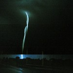

Ahhh! Mi colse ancor più forte la disperazione mentre stavo saltellando con un solo piede, ed è già molto che, ruzzolando sui gradini di granito mi ritrovi ancora in buono stato. Ma perchè questa frenesia? C’è nell’aria una qualche malattia, che vi devo dire, mi pare un’allergia! Mi hanno detto “Tu, tu che cerchi la Poesia, l’hai trovata, per caso?” preoccupato gli chiesi due volte gridando perchè “Perchè? Perchè?”, “Ah! Non sai ancora quel che è successo…”, timoroso risposi “no, è vero, io non so niente”, “sappi allora che sono andati a cercare la tua Poesia da un’altra parte, precisamente su Marte!”. “Chè? Sei diventato scemo per caso tutto ad un tratto?”, ma l’infame invero non volle rispondere e trasformato in enorme nembo schizzò nell’aire su per il cielo. E fu allora che decisi, per sempre i miei sforzi si sarebbero rivolti, con bramosia, alla ricerca di quella pazzia chiamata P-O-E-S-I-A.
Reposta per primo quest’articolo